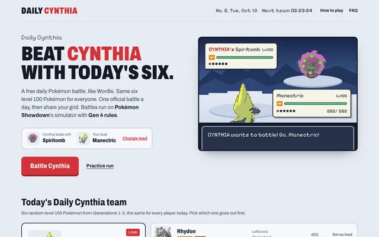

1M+ machines
ML model delivery
Open to Applied AI & Forward Deployed Engineer roles
New York · Remote · San Francisco

Software Engineer at Microsoft.
I built the pipeline that ships ML models to 1M+ machines and an MCP server AI agents call 100K+ times a day to check on software releases. Seven years turning partner needs into production systems.
7 years · New York · Brown CS & Economics
Previously Cisco · Goldman Sachs · Adobe
C# / .NET · Azure · TypeScript · React · MCP
1M+ machines
ML model delivery
10× throughput
Versus prior delivery
100K+ calls / day
MCP agent tooling
60s+ → 2.4s
Page loads under load
SELECTED WORK

AI technician for your computer. Fixes run only after you approve and leave a signed report. Tested on 21 scenarios.
AI desktop repairs
Tauri · Rust · React · TypeScript

AI chat that remembers only what you approve, with context retrieval, automated evaluations, and paid subscriptions.
AI chat · Memory & retrieval
Workers / D1 · OpenRouter · Clerk · Stripe

Published iOS camera. 128 editable film looks, live image processing, and native capture.
iOS camera · 128 film looks
SwiftUI · AVFoundation · Core Image
MICROSOFT · NOVEMBER 2020 TO PRESENT
Architecture · Partner delivery · Production operations
Built the pipeline that takes ML models from researchers to machines in the field, working with researchers, product managers, and device makers.
1M+ machines served · 10× prior throughput
Every release needs sign off, checks the version, and is safe to retry.
C# / .NET · Azure · Pipelines
Built an MCP server so AI agents can look up release tickets, update packages, and live system status. It is read only, so agents get answers but cannot change anything. Also wrote an agent skill that files model release requests.
100K+ calls a day from AI agents
MCP · Tool contracts · Authorization
Agreed with engineers at OEMs on what data their devices report, then built the pipelines that send test results back to ML researchers. New models are picked up automatically and ship only after product manager approval.
1M+ data points collected daily
Azure Logic Apps · Blob Storage · Telemetry
Made a slow internal release dashboard fast with caching and better queries. If a refresh fails, it keeps showing the last good data, never half of it.
Page loads: 60s+ to 2.4s under load
With one other engineer, built the system that delivers Windows updates to companies running their own update servers, from design to launch. Credited by name in the 2023 launch announcement.
Caching · Service Fabric · Access controls
A CLOSER LOOK
Real app screens. Click an image to visit.


MORE PROJECTS
50 SITES
50 small web tools I built and run: calculators, planners, and lookup tools. 33 are live on their own domains and 17 are deployed as previews.
Cloudflare Pages · Workers · Node.js · Next.js
See all 50 utility sites
FAN PROJECT
A free daily Pokémon battle in the browser. An unofficial fan copy of Daily Red with Champion Cynthia as the opponent, patched to Generation 4 rules.
Cloudflare Workers · Pokémon Showdown simulator
BACKGROUND
Full Stack Software Engineer. Built a ServiceNow integration for 60,000+ employees in Java, Angular, and MongoDB.
Intern. Built a company ownership (cap table) lookup used by 500+ investment banking analysts.
Intern. Worked on an e signature integration with ServiceNow and an education version.
B.S. in Computer Science and Economics.
GET IN TOUCH
Applied AI · Forward Deployed Engineering · Product engineering